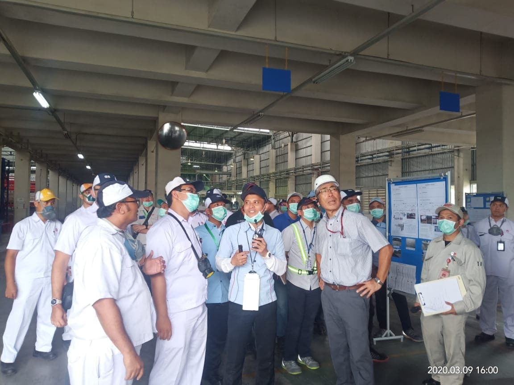

Jasa Interpreter Bahasa Jepang
Komunikasi bisnis tanpa hambatan bahasa. Interpreter profesional hadir di meeting room, lantai produksi, atau ruang negosiasi Anda.
98%
Tingkat Retensi Pesan
200+
Sesi Berhasil
50+
Klien Korporat
10+
Industri Dilayani
Metode Interpretasi
Dua metode interpretasi profesional untuk berbagai jenis situasi dan skala acara.

Interpretasi Konsekutif
Interpreter mendengarkan pembicara, mencatat, lalu menyampaikan pesan setelah pembicara berhenti. Ideal untuk meeting, negosiasi, kunjungan pabrik, dan wawancara.
- Cocok untuk 2–20 peserta
- Tanpa peralatan khusus
- Interaksi lebih personal

Interpretasi Simultan
Interpreter menerjemahkan secara real-time bersamaan dengan pembicara. Digunakan untuk konferensi besar, seminar, dan acara internasional.
- Ideal untuk 50+ peserta
- Memerlukan peralatan audio
- Tanpa jeda presentasi
Paket Layanan
Tersedia untuk berbagai durasi dan skala kegiatan Anda.
Harian
Layanan interpreter untuk kegiatan 1 hari penuh, meliputi kunjungan pabrik, negosiasi, atau tur fasilitas.
Mingguan / Proyek
Pendampingan untuk proyek multi-hari: pelatihan, audit, implementasi sistem, atau due diligence.
Jarak Jauh (Online)
Layanan interpreter via Zoom, Teams, atau platform video call lainnya. Hemat waktu dan biaya perjalanan.
Keunggulan Interpreter Kami
Standar profesional yang menjamin komunikasi Anda berjalan lancar.
98%
Tingkat Retensi Pesan
Akurasi penyampaian pesan yang terukur dalam setiap sesi
Latar Industri
Interpreter kami memiliki latar belakang industri spesifik
Etiket Bisnis Jepang
Paham keigo dan protokol formal bisnis Jepang
Dukungan 24 Jam
Tim kami siap membantu persiapan dan koordinasi acara
Butuh Interpreter Segera?
Kami dapat menyiapkan interpreter dalam waktu singkat untuk kebutuhan mendadak Anda.
Hubungi via WhatsApp